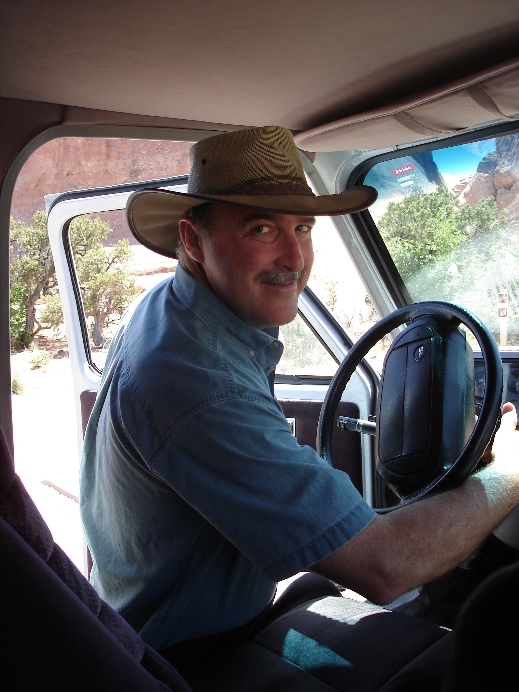

The Wizard: Michael Windham
Microsatellite data generated by Fay-Wei Li, James Beck, Cathy Rushworth
Programs written by Fay-Wei Li
Website developed by Fay-Wei Li
For biological questions (e.g. species ID), contact Michael Windham (mdw26@duke.edu)
For technical issues (e.g. bug report), contact Fay-Wei Li (fl43@duke.edu)
For Boechera microsatellite scoring guide, download here